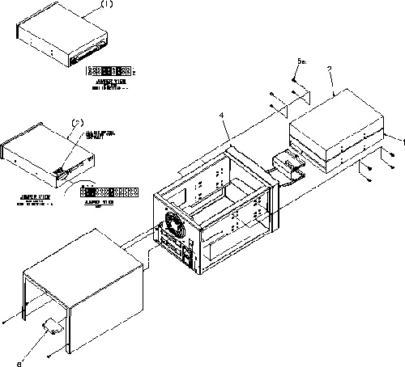
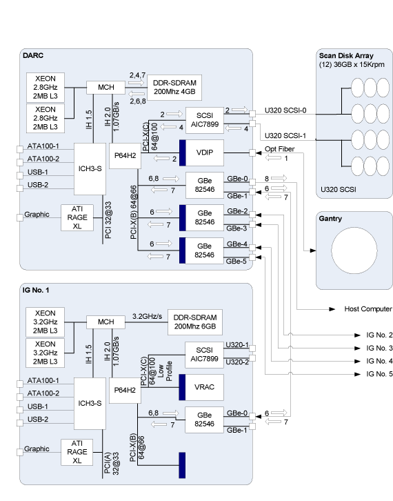
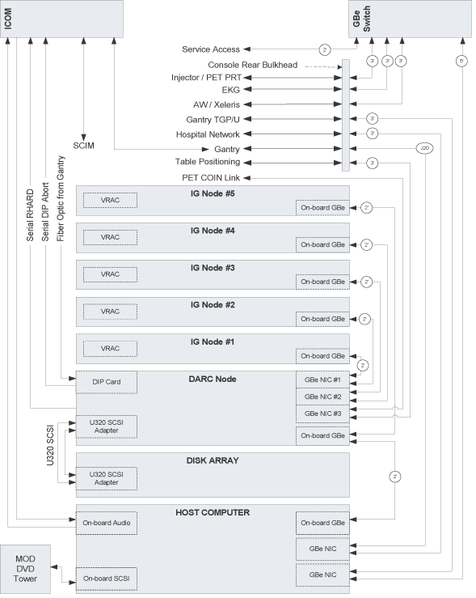
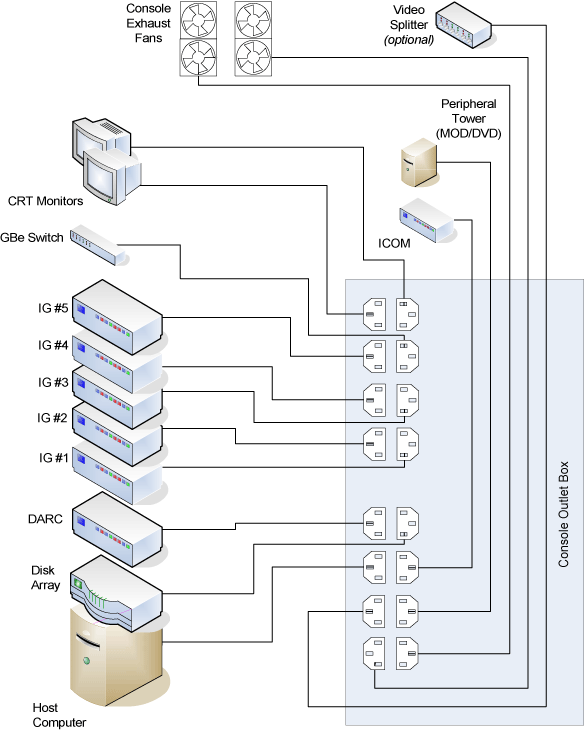
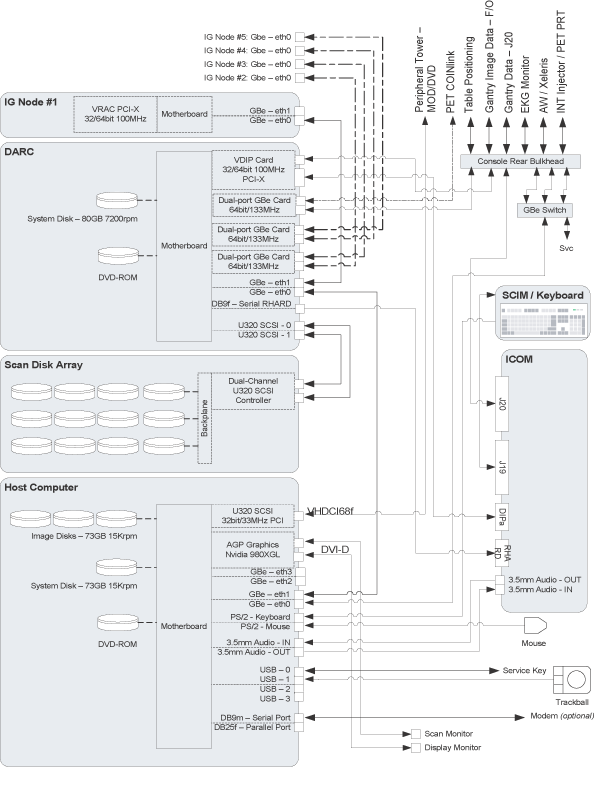
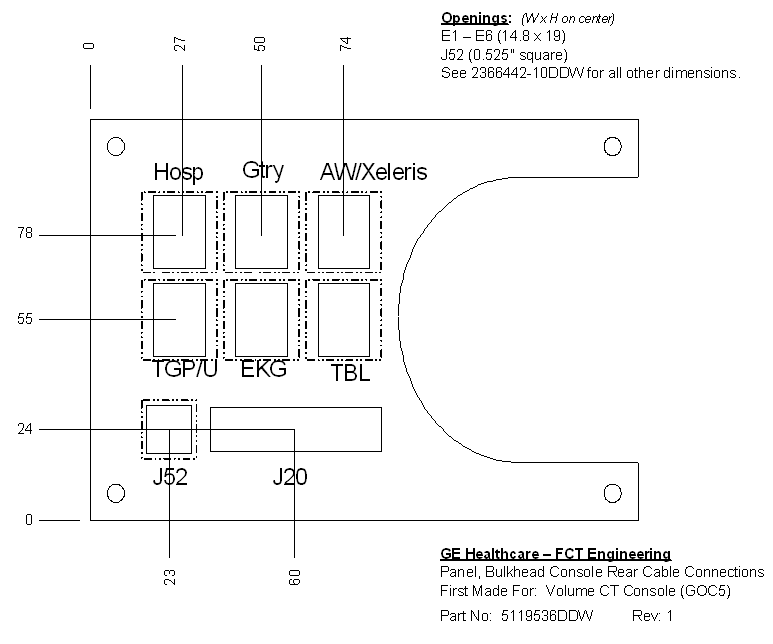

Operating Documentation
Direction 5193575-800, Rev# 5
LightSpeed 7.X Service Information - Adv
Operating Documentation |
| Last Revised: | 11 July 2007 |
This module contains the following information:
Section 1 - VCT Data Acquisition / Recon Control (VDA/RC)
Section 2 - Image Generation (IG) Computer
Section 3 - SCSI Tower
Section 4 - Global Operator Console 5th Version
Section 4.1 - Overview (GOC5)
Section 4.2 - VCT DARC
Section 4.3 - Image Generator (IG)
Section 4.4 - Power
Section 4.5 - Intercom Component
Section 4.6 - Service and Diagnostics
Section 4.7 - Console Block Diagrams
The VDARC outlined in this specification consists only of what is commonly referred to as a rack-mount computer. The supplied VDARC will include a supplier hardware diagnostic CD, but will not include external peripherals such as keyboard, mouse, display monitor(s), or external cables. These external and peripheral functions will be provided by GE Healthcare, unless agreed to and reflected in the respective part numbers. Agreements and system part numbers may also include the integration of GE Healthcare specified components into the VDARC, which will be outlined in this document and reflected in the respective part numbers. As an FDA governed and ISO compliant medical products OEM, controlled and documented configurations are of critical importance to GE Healthcare.
The requirements below are purposely specific to prevent supplier changes without advance notice and possible pre-qualification by GE Healthcare.
The VDARC motherboard shall be an Intel Westville, Intel Jarrell, or equivalent.
The VDARC Intel® Jarrell™ motherboard shall meet the following requirements:
Dual Intel® XeonTM Socket604 processors: 3.2GHz Mid-Voltage 2MB L2 cache
Onboard regulation of processor voltages
Intel® E7520 chipset
800Mhz Front Side Bus (FSB)
Minimum of two (2) 10/100/1000 Mb onboard Ethernet ports
6.0GB DDR2-400 ECC memory SDRAM® memory using minimum four (4) 184-pin DIMM sockets
The system shall be configured to redirect the console to the serial port, and allow access through the Ethernet connection (commonly called Serial Over LAN). Requires Intel Management Module (Option 1: Professional)
One (1) external PS/2a™ keyboard port
One (1) external HD-15 video monitor port
One (1) ATA100 interface
One (1) RS232 port with DB9 (male) interface
One (1) dual-channel Ultra320 SCSI controller capable of supporting externally connected peripherals
Minimum of three (3) PCI-X expansion slots (100Mhz min.) capable of 763MB/sec transfer rate between PCI-X bus and system memory
BIOS configuration is specified in Appendix A - BIOS Configuration.
The VDARC Intel® Westville™ motherboard shall meet the following requirements:
Dual Intel® Xeon™ Socket604 processors: 3.2GHz 2MB L3 cache
Onboard regulation of processor voltages
Intel® E750x chipset
533Mhz Front Side Bus (FSB)
Minimum of two (2) 10/100/1000 Mb onboard Ethernet ports
6.0GB DDR-266 SDRAM® memory using minimum six (6) 184-pin DIMM sockets.
Support Serial Over LAN (SOLAN)
One (1) ATA100 interface
One (1) UART, DB9 interface
One (1) Serial, DB9 (male) interface
One (1) dual-channel Ultra320 SCSI controller capable of supporting externally connected peripherals
Minimum of five (5) PCI-X expansion slots (100Mhz min.)
Capable of 763MB/sec transfer rate between PCI-X bus and system memory
BIOS configuration is specified in Appendix A - BIOS Configuration.
The Jarrell VDARC shall include three (3) PCI-X expansion slots:
Low Profile Slot – No riser used. This slot on the motherboard is not used and no slots are available in the chassis to allow for efficient thermal management.
Full Height Slot – 3U riser added as follows:
Riser = Intel Option 2: (1) 100, (2) 133 PCI-X (Active)
Top Slot = DAS Interface Processor (VDIP) card (2382000).
Middle Slot = OPEN
Bottom Slot = Dual-port NIC
The Westville VDARC shall include at least five (5) PCI-X expansion slots.
One (1) slot shall accommodate the VCT DAS Interface Processor (VDIP) card (2382000).
One (1) slot shall accommodate a VHDCI68f SCSI port access to on-board U320 SCSI controller.
One (1) slot shall accommodate a DB9 male serial port access to on-board serial port.
Two (2) slots shall accommodate a low-profile or “half height” network interface cards.
Any remaining slots shall be able to accommodate low-profile or “half height” cards
The VDARC does NOT require an internal 3.5”, half-height, 1.44MB floppy diskette drive.
The Jarrell VDARC shall include one (1) internal hard disk drive as follows:
2.5” half height form factor
IDE ATA-100 interface
| NOTE: | A 40-pin cable may be used to facilitate airflow within the chassis as it does not appear to adversely affect performance of the system. |
Minimum unformatted capacity of 40GB
Minimum rotational rate of 5,400 RPM
Qualified Drives as agreed on between supplier and GEHC
The Westville VDARC shall include one (1) internal hard disk drive as follows:
3.5” half height form factor
IDE ATA-100 interface
Minimum unformatted capacity of 40GB
Minimum rotational rate of 7,200 RPM
The VDARC shall include one (1) internal DVD-ROM drive as follows:
5.25” “slim” form factor
IDE (ATAPI) interface
Minimum Rotational speed: 24X
Minimum of 512K internal data buffer
Read compatible with CD-R, CD-ROM, CM-ROM-XA, CD-I, CD Audio (CD-DA), PhotoCD Multi-session, CD-Extra, CD-Text, and DVD-ROM.
Due to requirements of the GEHC Operating System auto-loader this drive cannot be the master drive on the IDE BUS.
The Jarrell VDARC shall have four (4) external Ethernet port connections as follows:
Two (2) ports may be motherboard-resident (e.g. two ports onboard the Intel® Jerrell™)
Intel® 82546GB controller
Two (2) ports shall be added using a full-profile, dual-port, PCI-X expansion card as agreed on between supplier and GEHC
IEEE 802.3 compatible 10/100/1000 MB/sec auto-sensing Ethernet
Standard shielded 8-pin RJ45 locking female connector mounted at rear of the chassis
The Ethernet connector shall have the following pin assignments:
| Pin 1: | TX + | Pin 5: | DC - |
| Pin 2: | TX - | Pin 6: | RX - |
| Pin 3: | RX + | Pin 7: | DD + |
| Pin 4: | DC+ | Pin 8: | DD - |
The Westville VDARC shall have six (6) external Ethernet port connections as follows:
Ports may be motherboard-resident (e.g. two ports onboard the Intel® Westville™)
Intel® 82546GB controller
Ports may be added by using (2) low-profile, dual-port, PCI-X expansion cards as follows:
Intel® PWLA8492MT (PBA# C29887-002 or C41421-003)
IEEE 802.3 compatible 10/100/1000 MB/sec auto-sensing Ethernet
Standard 8-pin RJ45 locking female connector mounted at rear of the chassis
The Ethernet connector shall have the following pin assignments:
| Pin 1: | TX + | Pin 5: | DC - |
| Pin 2: | TX - | Pin 6: | RX - |
| Pin 3: | RX + | Pin 7: | DD + |
| Pin 4: | DC+ | Pin 8: | DD - |
The VDARC shall have two (2) external Ultra320 SCSI ports on a dual-channel bus, each having a VHDCI68 female connector with captive #2-56 female screw jacks for cable attachment.
One port may reside on the motherboard, protruding through the rear of the chassis, and shall be pulled from the SCSI BUS referenced above. The other may be pulled from a board-resident bus and made available externally via an unused PCI slot at the rear of the chassis.
The Jarrell VDARC shall have two (2) serial ports, assigned as follows:
One RJ-45 physical interface
One DB9 physical interface
| NOTE: | Console redirection is managed by the OS per the following
|
The Westville VDARC shall have two (2) serial ports, assigned as follows:
ttyS0 - pulled to a DB9 (male) interface at the rear of the chassis
ttyS1 - redirected for serial-over-LAN requirements.
The Jarrell VDARC shall include external switches and indicators on the chassis as follows:
A pushbutton system POWER ON/OFF switch, which toggles system power ON or OFF when pressed or held.
A pushbutton system RESET switch, accessible on the front of the chassis, that re-initializes all internal hardware without cycling power to the VDARC (hard reset/soft boot).
LED indicators shall be accessible and visible on the front of the chassis with the appropriate IEC icons and colors as follows:
System power is ON - steady BLUE
LAN Activity - flashing AMBER
Hard Disk Activity - flashing GREEN
The Westville VDARC shall include external switches and indicators on the chassis as follows:
A pushbutton system POWER ON/OFF switch, which toggles system power ON or OFF when pressed or held.
A pushbutton system RESET switch, accessible on the front of the chassis, that re-initializes all internal hardware without cycling power to the DARC (hard reset/soft boot).
LED indicators shall be accessible and visible on the front of the chassis as follows.
System power is ON - steady GREEN - labeled “I/O” or “Power”
LAN Activity - flashing GREEN - labeled “LAN”
Hard Disk Activity - flashing RED - labeled “HDD”
The VDARC shall operate within the following limits of environmental conditions:
| Temperature | 5° - 35° C (41° - 95° F) |
| Temperature Change | 3° C per Hour (37.5° F per Hour) |
| Relative Humidity | 10% - 90% (non-condensing) |
| Relative Humidity Change | 5% RH per hour |
| Noise | Less than 45 dBa |
| Altitude | 10,000 feet above sea level |
| Shock | Max 20G @ less than 3ms (1/2 sine) |
| Vibration | Max random 0.21G RMS |
The VDARC shall sustain no permanent damage while in the following non-operating environment, such as during shipment.
| Temperature | 0° to 50° C (32° to 122° F) |
| Temperature Change | 5° C per Hour (41° F per Hour) |
| Relative Humidity | 5% - 95% (non-condensing) |
| Relative Humidity Change | 5% RH per hour |
| Altitude | 40,000 feet above sea level |
| Shock | 80G @ less than 3ms (1/2 sine) |
| Vibration | 2.09G RMS (random) |
| Max swept sine 0.5G RMS (0-peak) |
The Image Generator (IG) outlined in this specification consists only of what is commonly referred to as the computer. The supplied IG will not include external peripherals such as keyboard, mouse, display monitor(s), or external cables. These external and peripheral functions will be provided by GE Healthcare unless agreed to and reflected in the respective part numbers. Agreements and system part numbers may also include the integration of GE Healthcare specified components into the IG which will be outlined in this document and reflected in the respective part numbers. As an FDA governed and ISO compliant medical products OEM, controlled and documented configurations are of critical importance to GE Healthcare. The requirements below are purposely specific to prevent supplier changes without advance notice and possible pre-qualification by GE Healthcare.
The VIG motherboard shall be an Intel Westville, Intel Jarrell, or equivalent.
The VIG Intel® Jarrell™ motherboard shall meet the following requirements:
Support Dual Intel® XeonTM Socket604 processors (3.2GHz minimum)
Onboard regulation of processor voltages
Intel® E752x chipset
800Mhz Front Side Bus (FSB)
Minimum of one (1) 10/100/1000 Mb onboard ethernet port
One (1) external PS/2™ keyboard port
One (1) external HD-15 video monitor port
6.0GB DDR2-400 ECCmemory SDRAM® memory using minimum six (6) 184-pin DIMM sockets.
Support Serial Over LAN (SOLAN)
- Requires Intel Management Module (Option 1: Professional)
One (1) PCI-X expansion slot (100Mhz min.) accommodating a riser card.
A board management controller (BMC), which supports IPMI 1.5 or later. The BMC shall be able to control motherboard power via IPMI commands.
BIOS configuration is specified in Appendix A - BIOS Configuration.
Support Dual Intel® XeonTM Socket604 processors (3.2GHz minimum)
Onboard regulation of processor voltages
Intel® E750x chipset
533Mhz Front Side Bus (FSB)
Minimum of one (1) 10/100/1000 Mb onboard ethernet port
6.0GB DDR-266 SDRAM® memory using minimum six (6) 184-pin DIMM sockets.
Support Serial Over LAN (SOLAN)
One (1) PCI-X expansion slot (100Mhz min.) accommodating a riser card.
BIOS configuration is specified in Appendix A - BIOS Configuration.
The VIG shall include one (1) PCI-X expansion slot:
Low Profile Riser Slot – no riser used
Full Height Riser Slot – 1U riser, Intel Option 1: (1) 100/133 PCI-X
This expansion slot shall contain one of the following:
GEHC P/N 2395084 VCT Recon Acceleration Card (VRAC) – P/N 5159834
GEHC P/N 5143008 VCT Recon Acceleration Card 2 (VRAC2) – P/N 5159834-2 or -3
The IG shall include at least one (1) PCI-X expansion slot capable of accommodating a full height, three-quarter length PCI card.
This expansion slot shall contain a VCT Recon Accelerator Card (GEHC part no. 2395084)
The IG does not require a floppy diskette drive.
The IG does not require Ethernet ports in addition to the board-resident port.
The VIG shall include external switches and indicators on the chassis as follows:
A system pushbutton POWER ON/OFF switch, which toggles system power ON or OFF when pressed or held.
A pushbutton system RESET switch, accessible on the front of the chassis that re-initializes all internal hardware without cycling power to the VIG (hard reset/soft boot).
LED indicators shall be accessible and visible on the front of the chassis with the appropriate IEC icons and colors as follows:
System power is ON - Steady BLUE
LAN Activity - Flashing AMBER
The IG shall include external switches and indicators on the chassis as follows:
A system pushbutton POWER ON/OFF switch which toggles system power ON or OFF when pressed or held.
A pushbutton system RESET switch accessible on the front of the chassis that reinitializes all internal hardware without cycling power to the IG (hard reset/soft boot).
LED indicators shall be accessible and visible on the front of the chassis as follows.
System power is ON - steady GREEN - labeled “I/O” or “Power”
LAN Activity - flashing GREEN - labeled “LAN”
The IG shall operate within the following limits of environmental conditions:
| Temperature | 5° - 35° C (41° - 95° F) |
| Temperature Change | 3° C per Hour (37.5° F per Hour) |
| Relative Humidity | 10% - 90% (non-condensing) |
| Relative Humidity Change | 5% RH per hour |
| Noise | Less than 45 dB |
| Altitude | 10,000 feet above sea level |
| Vibration | Max 20G @ less than 3ms (1/2 sine) |
| Vibration Max | Max random 0.21G RMS |
The IG shall sustain no permanent damage while in the following non-operating environment.
| Temperature | Westville: 0° to 50° C (32° to 122° F) Jarrell: -40° to 70° C (-40° to 158° F) |
| Temperature Change | 5° C per Hour (41° F per Hour) |
| Relative Humidity | 5% - 95% (non-condensing) |
| Relative Humidity Change | 5% RH per hour |
| Altitude | 40,000 feet above sea level |
| Shock | 80G @ less than 3ms (1/2 sine) |
| Vibration | 2.09G RMS (random) Max swept sine 0.5G RMS (0-peak) |
IG defined as:
5159834 VIG with 2395084 VCT Recon Accelerator Card (VRAC)
5159834-2 VIG2 with 5143008 VCT Recon Accelerator Card 2 (VRAC2)
5159834-3 VIG3 with 5143008 VCT Recon Accelerator Card 2 (VRAC2)
5114533 IG as defined herein including:
Dual Intel® XeonTM 2.8Ghz processors, 512KB L2 Cache, 2.0GB DDR200 SDRAM memory, etc.
2316826 VCT Recon Accelerator Card (VRAC).
Two Bay External SCSI tower that is used on the GOC5 Console. The tower will contain a MOD read/write device and a DVD-RAM drive.
Illustration 1: SCSI Tower (Exploded View)

| NOTE: | Click on the PDF icon below, to view the full version of the illustration. |
Media File 1: SCSI Tower (Exploded View)

The Global Operator Console 5th version (GOC5) consists of the following four (4) components.
The VCT Data Acquisition and Recon Control (VDARC) Component.
Just a Bunch Of Disks (JBOD) (a.k.a. Disk Array, or Raid) Component.
The Image Generator (IG) Components, Up to five (5).
Intercom Component - Is now a standalone component.
The VCT DARC node receives raw data from the VCT Data Acquisition System (VDAS) through an on-board VCT Data Interface processor (VDIP) card, and stores that data in the JBOD located in the Disk Array Node. The raw data is then delivered from the Disk Array Disks to the IG nodes. The IG nodes then create images using on-board processors and VCT Recon Accelerator Cards (VRAC). The images generated by the IG nodes are sent back to the VDARC node, which gathers the images and sends them to the Host Computer.
Each IG node will be capable of booting itself via Gigabit Ethernet, using Serial Over LAN (SOLAN) functionality.
The host computer for the GOC5 console will be an off-the-shelf, Linux-based system, which meets EMC requirements per CISPR 11.
The VDARC node provides to the IG nodes not only boot code but all application code and parameters as well.
Key goals of the GOC5 are:
Scalability - performance and cost are scalable.
Flexibility - new functions and features such as cone-beam back projection should be easy to implement.
Performance - the high-end configuration should support 12 frames per second 2D back projection.
Ability to Upgrade - it should be relatively easy to replace installed-base consoles.
Performance - general purpose processors should be used to take advantage of improving processor speeds in the industry.
The overall performance scope of the GOC5 shall be as follows:
Recon times: 4fps - 12fps @ 2D BP
Latency: < 2.0 seconds
Image Matrix: < 512 x 512 pixels
2D BP: hardware and software support
3D BP: not yet supported
The VDARC node controls most of the GOC5 functions and data flow, the exception being actual image generation. This node will receive a reconstruction request from the host computer, recognize the recon mode, timing, parameters, and data, and generate the image set.
The raw data is first restored from the Scan Data Disks. The VDARC node then creates an image set and requests image generation from the IG nodes.
While most of the software components (e.g. Recon_Control, Data_Restore, Image_Buffer, and Data_Acq) reside on this node, the components related to image generation are calculated on the IG nodes. The VDARC node may help with some light calculation tasks such as offset vector generation.
Main data flow of the VDARC node is described as follows:
Receive raw data from the Gantry
Store the raw data to the Scan Data Disks (JBOD-12)
Restore the raw data from the Scan Data Disks and transfer to the IG nodes over GB Ethernet
Take multi-image streams from the IG nodes and forward them through a dual image stream to the host computer
The control flow is described more fully in the GOC5 Design Theory of Operation.
The VDARC node is comprised of the following:
VDARC computer: a computer node using a high-performance PC server.
VDARC disk: the OS and Image Reconstruction Applications Software are stored on this disk.
VCT DIP card: the DAS VCT Interface Processor card.
Gigabit Ethernet (GbE) cards
DVD-ROM drive: will be used for software installation and stand-alone use.
The VDARC node is intended to be a highly independent module, which can be replaced with PC servers consisting of the same specifications, regardless of manufacturer or manufacturer location.
The VDARC node will take advantage of a standard, off-the-shelf motherboard, using dual microprocessors to increase processing density. The VDARC node will use very high performance general-purpose processors, memory, and a server motherboard with GB Ethernet and SCSI port(s), and power supply.
The chassis is a standard EIA 19" x 2U rack-mount with a maximum depth of 20". The chassis have a cooling system capable of sufficiently dissipating heat created by the motherboard's dual processors.
The VDARC will boot up when AC power is provided to the components power supply without requiring a PWON signal toggle. Such a hardware switch is needed for installation power-on and recovery from unexpected BIOS power-on settings.
A power-on LED will indicate that the VDARC power supply is providing DC output to the motherboard and should be mounted on the front of the chassis. Additional LED indicators such as on/off/blinking are more fully described in motherboard vendor specifications.
The VDARC shall be able to be reset by a single hardware switch located on the front of the chassis.
| NOTE: | When the VDIP card detects a PCI reset, all registers are cleared, causing the RHARD and X-ABORT relay to open. |
The VDARC disk consists of a single SCSI or E-IDE disk and provides OS code, application programs, tables, and parameters to the GOC5. All nodes in the GOC5 are booted from this disk, which also has the swap partition area to the VDARC node.
Rotation speed: 7,200 rpm or higher
Interface: ATA100/133 (recommended) or newer; Ultra160/320 SCSI (acceptable)
Capacity: 36GB or higher
Form Factor: 1" height, 3½” HDD
Connection: 40-pin ATA100, 80-pin SCA2, or HD68-pin
The high-speed Scan Data Disks are connected to the VDARC node via an internal Ultra320 SCSI bus. To increase the disk read/write speeds software RAID0 (striping) is employed. The Scan Data Disk configuration may change according to the number of detector slices, DAS trigger rates, and/or IG performance.
Rotation speed: 7.2k, 10k, or 15k rpm or higher
Interface: Ultra320 SCSI or successor
Capacity: 18, 36, 73, 146, or 300GB
Form factor: 1" height x 3½” HDD
Connection: HD68-pin, powered by 4-pin commercial Mate-N-Lok
RAID0: striping up to Twelve (12) disks
This PCI VDIP card supports almost the same functionality as the current DIP in that it converts the optical signal received from the Gantry into electrical raw data and writes that data to one of the double buffers on the card. When the received data count reaches a predetermined value it will switch over to the other buffer. The VDARC then receives this data via the PCI bus.
Serial data received from a fiber optic interface (see Table 1).
For 32 slice configuration, use channel 1 for data transfer. Do not use channel 2.
For 64 slice configuration, use channel 1 for transferring data from DAS A-side and channel 2 for transferring data from DAS B-side.
Optical fiber channel 1 and channel 2 cannot be swapped. When channel 1 or channel 2 has the wrong data for the channel, the VDIP will generate a PCI interrupt and show “incorrect channel connection” at the interrupt status register.
Table 1: Serial data received from a fiber optic interface
| VCT DAS Data Transfer Rate | 2.500 Gbaud per link (5.0 Gbaud w/ 2links) |
| Estimated FEC Overhead | 15% (Reed Solomon [46,40]) |
| Interleaver Configuration | Convolutional Interleaver I=16, J=14 |
| Data Compression Scheme | None |
| Serial Encoding Scheme | 8B/10B encoding with Altera Gigabit Transceiver block |
| Data Transfer Rate | 337 Mbyte/s |
| Fiber Interface Device | Stratos Lightwave PLC-25-C-1-G |
| Physical Communications Media | 850 nm, 62.5 / 125 glass fiber optic cable |
Additional details can be found in the DRS spec. - 2382000DRS.
Each IG node is to be connected to the VDARC via an off-the-shelf Gigabit Ethernet (GbE) card connected to one of the VDARC's PCI-X slots. Depending on the number of optional IG nodes additional GbE cards may be added to the VDARC.
Dual Gigabit Ethernet ports
10Base-T, 100Base-TX, 1000Base-TX IEEE802.3ab compatible
64bit, 66MHz (or higher) PCI-X interface
Low profile form factor
The DVD-ROM drive is used for software installation, system diagnostics, and to support stand-alone operation of the VDARC.
The Image Generator (IG) component mounts an FPGA accelerator card (VRAC card) on a PCI-X slot. The IG node works under the VDARC's supervision as a very high performance image generation calculator. When an IG node receives an image generation request from the VDARC it will perform image generation processes. (i.e. preprocess, filtered back projection and post process, etc.) When an image set is calculated, the IG node notifies the VDARC and transfers the set of pixel image data to the VDARC via Gigabit Ethernet. Because each IG node is connected to the VDARC node directly, without a switching hub, the individual IG nodes do not communicate with each other nor do they share processing data.
The GOC5 will consist of 5 IG nodes of varying performance. For example, one node may be replaced by a later version IG node having higher frequency CPUs. The GOC5 hardware allows any combination of server performance among the IG nodes. Therefore, all IG nodes and VDARC nodes have to respond to a hardware configuration inquiry. If an IG node goes down, the other nodes will continue to function but at a reduced performance.
The IG node consists of the following:
IG computer: computer using a high-performance PC server
VRAC Card: VCT Recon Accelerator Card plugged into a PCI-X slot in the IG computer
The IG computer will be identical to the VDARC computer as described in above with the following exceptions:
Chassis size: 19" rack-mount type EIA 1U height x 20" max depth
DVD-ROM Drive: the IG computer will not have a DVD-ROM drive
This “low-profile” PCI card accelerates the two-dimensional (2D) back-projection process of the GOC5 and is plugged into a 64bit, 66MHz (533MB/sec) PCI-X slot on the IG node.
This VCT Recon Accelerator Card (VRAC) shall increase the reconstruction performance of the Global Operator Console Version 5 (GOC5) by off-loading 3-dimensional, or cone beam, back-projection (3D-BP) from its general-purpose processors to fully programmable hardware. The current software version of 3D-BP creates one image, or frame, every 3-seconds. This hardware implementation Has the capability to create images at a rate of 7-frames per second (FPS). The card is on the PCI-X bus of each IG Node. All communication between the node’s Host Computer and the VRAC is through this bus.
Following are the high-level requirements for the VRAC card:
Perform 2D parallel beam back-projection at >6fps
PCI-X low-profile compatible
Communicate with IG computer through a go => complete protocol
Support PCI and Mailbox interrupts
Reconstruct any image matrix size up to 524,288 32bit pixels
In-system programmable FPGA design via software download
The major elements of the VRAC card consist of:
4 Field Programmable Gate Array (FPGA)
QDR™ SRAM - creates two blocks of memory
FLASH Memory - contains the FPGA's configuration code
The VDARC, IG, nodes are each powered by an AC switching power supply internal to each chassis. Each node receives its AC power from a pair of 120Vac single-phase circuits in the outlet box internal to the console chassis.
A redundant power supply and/or UPS option does not need to be supported by each node. The NGPDU will provide 120Vac to the operator's console via the 2 circuits. The switching power supply internal to each node is required to allow ±5% stability.
An outlet box supplying 120Vac per outlet is included within the chassis to support sixteen (16) devices. The total amperage for the system will not exceed 24 Amps. The following devices may be connected into the outlet box, and should not use more power than the specified values.
| Two (2) Monitors | 145W | Remote Monitor | 65W |
| Host Computer | 465W | DASM Option | 85W |
| VDARC Node | 400W | Video Splitter | 12W or 85W |
| Five (5) IG Nodes | 300W (ea) | Image Printer | 250W |
| Scan Disk Array | 300W | Modem | 20W |
| Peripheral Media Drive | 200W |
Incoming power to the console will be 120Vac on two 15a circuits. The incoming power will be connected to an EMC filter (Schaffner FN660-16/10 or equivalent). The outlet box will have two 15 amp circuit breakers on the outlet box, separate from the switch, to turn the power on and off.
The intercom block has an audio amplifier circuit, enabling communication between the console operator and the patient on the table. This block also has sound source switching functionality.
The sound sources are:
Console microphone on the SCIM (Operator's voice)
Gantry microphone output (Patient's voice)
Auto-voice L and R (output from the host computer)
These sound sources are multiplexed by the TALK button on the SCIM and by the Auto-voice output itself. The selected output signal goes to the following devices, based on prioritized logic.
Table speaker
Console speaker on the SCIM
Auto-voice recording input on the host computer
Refer to Intercom Theory and Adjustments for more information.
The GOC5 1.0 supports two types of diagnostic, power-on test and offline test. The power-on test is a subset of offline test. This test sweeps devices condition and checks the motherboard and some devices BIST results at system power-on after OS booted. The offline test checks each device condition, interface, and environment more strictly. The GOC5 1.0 should recover most of diagnostic condition without whole sub-system reset except motherboard diagnostic.
The GOC51.0 supports some kind of diagnostic tools.
Motherboard diagnostics, including memory test
VDIP diagnostic
VRAC BIST and/or diagnostic
Disk Array diagnostic
Network / connectivity test
Assemblies are assigned as FRUs based on the likelihood of need for replacement and fixed-right- first-time (FRFT). The following is a breakdown of GOC5 FRUs:
VDA/RC node
VDIP Board
IG node
VRAC Card
ICOM Node
Data Disk Array (12)
Safety & SCSI IF Board
Host Computer
A diagnostic tool must identify the error unit as FRU level.
The diagnostic tool supports system inquiry capability. These are some examples of inquiry items, CPU frequency, Memory capacity, Disk configuration, number of IG etc.
Illustration 2: GRE High Level Hardware Level Data Flow

Data Flow Dictionary:
Gantry -> VDIP (serial data receive via fiber-optic interface)
VDIP -> Scan Data Disks (scan data store via U320 SCSI)
Scan Data Disks -> VDARC (offset data via U320 SCSI)
Scan Data Disks -> Data Restore (view data via U320 SCSI)
Recon Control -> IG Nodes (Cal data, offset vector, tables, parameters via GBe)
Data Restore -> IG Nodes (view data transfer from VDARC to each IG via GBe)
IG Nodes -> Image Buffer/Create (pixel image data and small headers are transferred from IG to VDARC via GBe)
Image Create -> Image Database (DICOM image data transferred from VDARC to Host Computer via GBe)
Illustration 3: GOC5 Functional Diagram

Illustration 4: Power Distribution

Illustration 5: GOC5 Interconnect Diagram

Illustration 6: GOC5 Rear Bulkhead
